A few projects I had a lot of fun building, outside the day job. Open System Briefs for more technical and deployment details.
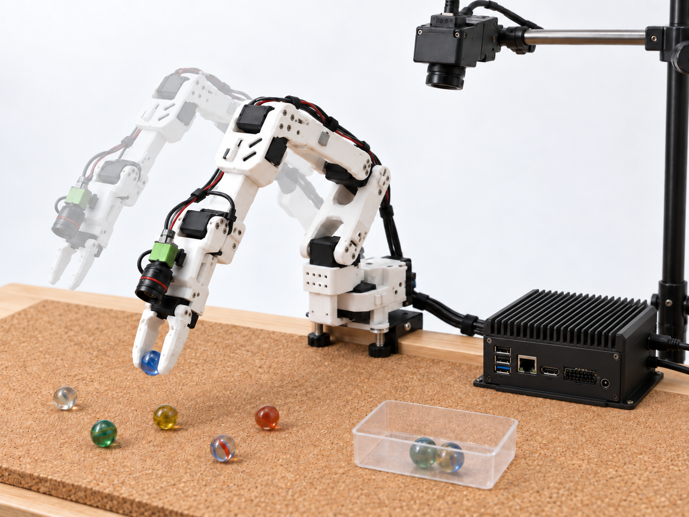
01 / 01
In progress
Edge-Corrected Teleoperation
Adjusting joint rollouts on-system to align with intent, rather than relying on tracking accuracy
Project premise
Teleoperation is brittle with feedback latency and sensitive to control resolution
ProblemLag and imperfect instructions
HardwareJetson Nano Super
PurposeCorrections and safety adherence
Remote teleoperation is never as clean as a replay. There is delay, a camera view that arrives late, and plenty of little inputs that only make sense in context. I am working on a local layer that can spot the intended motion and make a small adjustment before the robot acts on it.
In addition to potentially improving performance, the raw commands, local correction, and final rollout are logged together. This makes it possible to train on moments where a person was compensating for bad latency, rather than treating every recorded motion as perfect. As an 'inverse corrective action', a future full-featured supervisor/control model can be trained off a corpus of such corrections.
operator command → local state check → intention or safety alignment comparison → augmented operator command -> local logged result
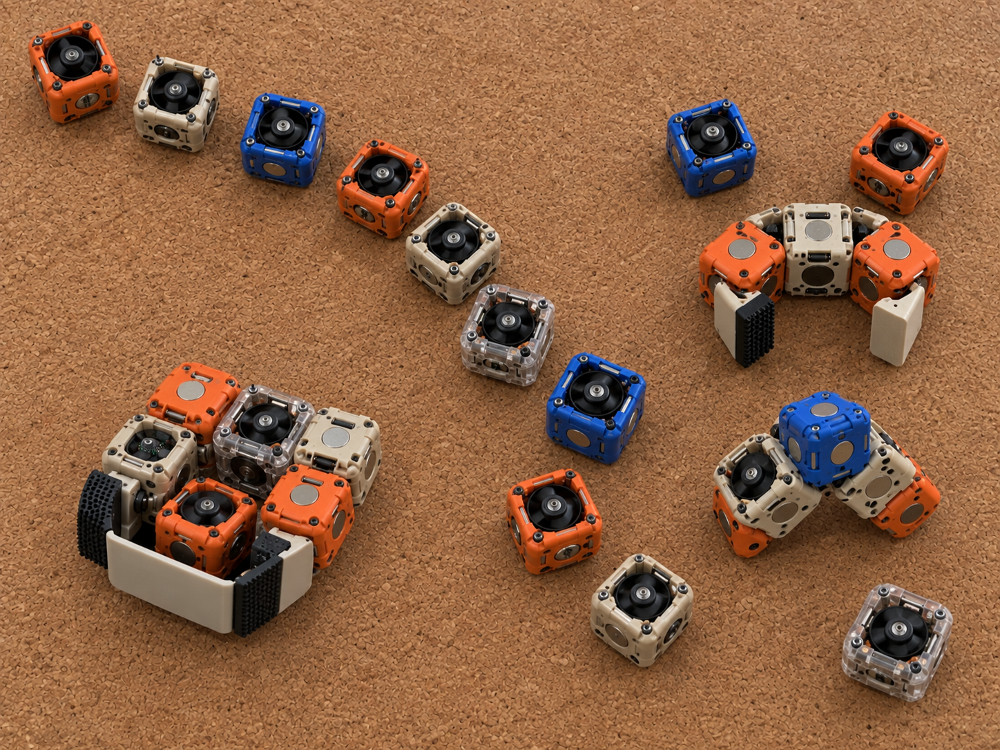
01 / 01
In progress
Swarming Formations
Modular swarm networked units with orientation-control and deformable sensing skin
Project premise
End effectors and structures have narrowly defined utility at design-time. If intelligence is generalizing, why shouldn't the morphology?
ConfigurationsGripper, scoop, platform, etc
StructuresBraces, supports, simple frames
compsitionSoft cubes, flywheels, electromagnets
The same set of subcomponents could make a scoop, a support under a load, or a scaffolding. A single robot body is good at one thing, but having a cluster of components with ability to rearrange with orientation adjustments could generalize aspects of otherwise fixed robot layouts.
Shrinking a meaningful inductive charging solution is proving tricky. Getting the joins right, characterising how much load each entity can take, and seeing what happens when parts don't interact correctly will determine if this project has a future.
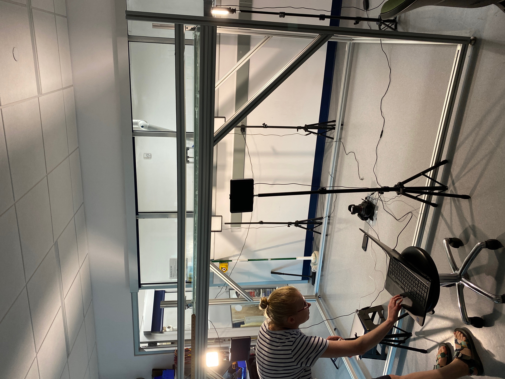
01 / 02
Stigmergic Swarms
Mobile robot swarms using a fluid surface as a messaging board
Project premise
If robots can't directly communicate, can they coordinate by marking their shared environment?
At Cornell’s Collective Embodied Intelligence Lab, under Kirstin Petersen, I explored stigmergy: coordination through persistent changes to a shared environment. Bees leave pheromone trails in air. I wanted to know what that idea could look like in water, where connectivity is unreliable and the environment can carry a signal.
The bubble pattern was the message. Its timing, speed, and formation could represent a bit, a location, a direction of travel, or another shared state. I wrote the distributed processing and vision algorithms that made that loop usable, including image segmentation and tracking work that reduced processing time from roughly one second to 150 milliseconds. With that feedback loop in place, the agents showed meaningful multi-agent behavior without ever receiving a direct message from each other.
While the outcome of this particular investigation was incorporated into a larger stream of research yet to be published, the project was a first exposure to swarm robotics and the potential for low-cost high-volume robots to be placed in harsh or restrictive conditions.
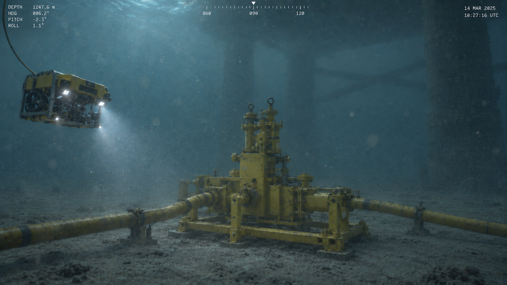
01 / 01
In progress
Subsea Sim
Photoreal closed-loop for underwater robots and complex underwater scenes
Project premise
ROV to UAV transition lags in part due to inadequate sim tooling
OriginEntrepreneur First
PrototypeOffshore-rig construction cell
StatusDemo'ed to offshore engineering teams
The idea started at Entrepreneur First, then I kept working on it after leaving. I built a small digital twin of an offshore rig where underwater vehicles could inspect, lay, and operate on the seabed.
The point was not to make an ocean scene look nice. I wanted a perception stack to deal with murky water, backscatter, changing light, currents, and a vehicle that did not stay perfectly still. The simulator produced RGB, depth, sonar, DVL, and pose data together, then ran the perception work in the loop with the vehicle controls.
rig CAD + survey geometry + water conditions
→ calibrated RGB / sonar / DVL data
→ perception + state estimation stack
→ current-aware vehicle control
→ ROS integration for engineering assets to be loaded and actutated
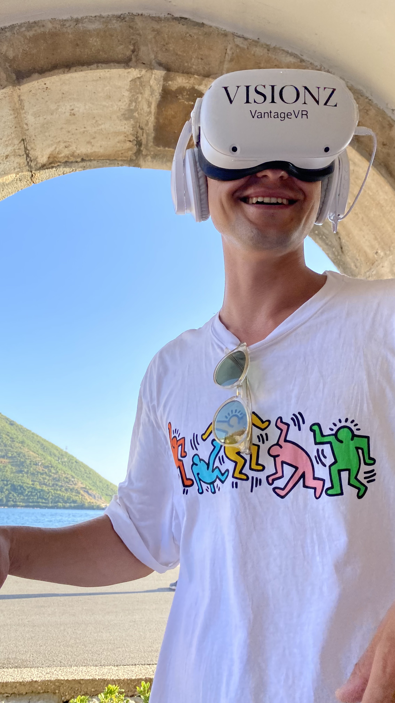
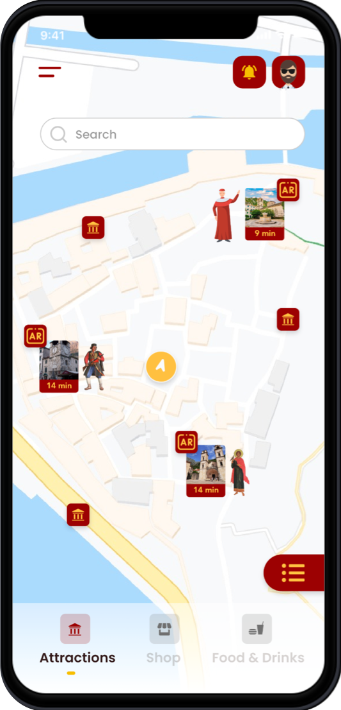
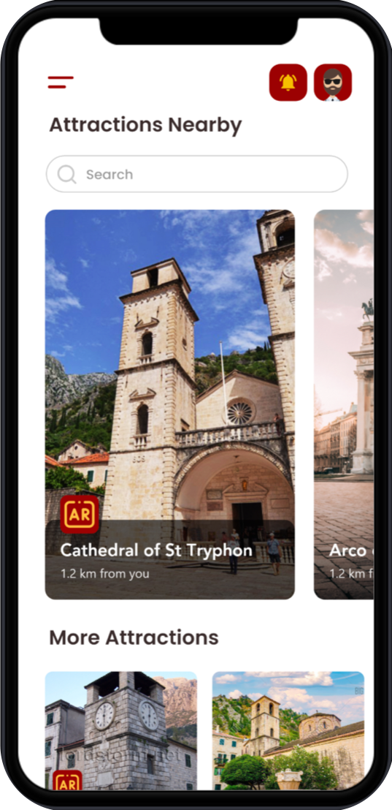
01 / 04
Visions
Generalizable mixed reality offerings to make historical and cultural tourism more immersive
Project premise
Why rely on imagination, when we can render historical scenes onto the real world, to be experienced right where they happened?
ExperiencesCityAR + VantageVR
LaunchedMontenegro, Summer 2021
PartnersLocal operators + Montenegro NTO
I built Visions while returning to Kotor in Montenegro between the end of high school and my second year of college. COVID had emptied the historic old-town, with cruise ships and buses from up and down the Balkans missing. Tourism, accounting for 30%+ of Montenegro's GDP, needed its attractions to stand out more in order to attract a limited crowd. I was already deep into AR/VR at the time, and experiencing history had always been the part of travel I cared about most.
For VantageVR, I worked with an asset developer to turn the researched story and scene design into a Unity experience packaged as an APK for Oculus Quest. The experience was launched for paying customers in Perast and aboard boats travelling to Our Lady of the Rocks. I validated the reconstruction through sustained work with local officials and museum curators, plus a lot of primary and secondary research on Perast.
KotorAR extended the idea to a phone. Visitors could hold up a phone at an attraction, see an AR reconstruction of its earlier form, then follow guides and context into the story around it. I owned the product and technology architecture around the app, including local-business and mass-transit integrations. The asset developer built the AR scenes; I made sure the experience connected those scenes to the city around them.
The project was backed by Montenegro's national tourism organization and was discussed in the country's Senate during the COVID era as part of the conversation around tourism technology infrastructure. It came as small businesses suffered a lack of visibility in an increasingly restricted old-towns, and is a concept that has since seen adaptations in many major cities worldwide.
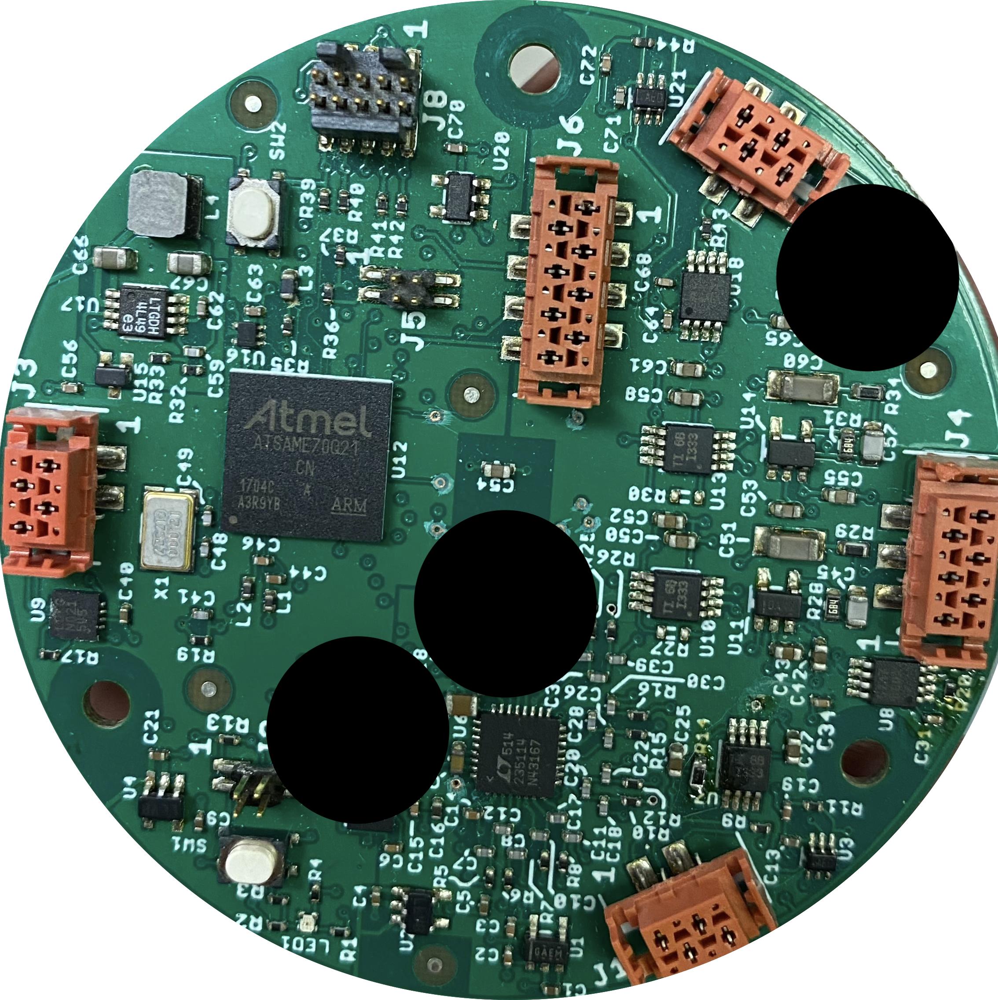
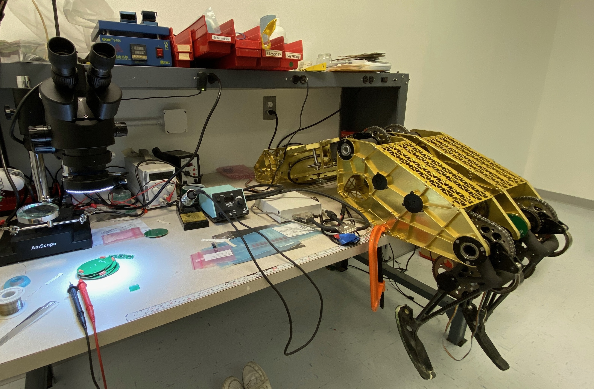
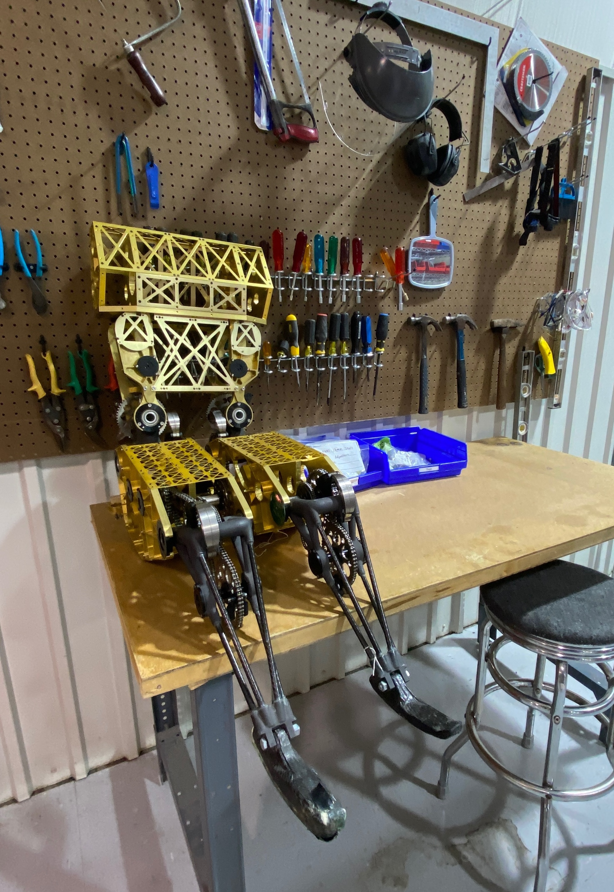
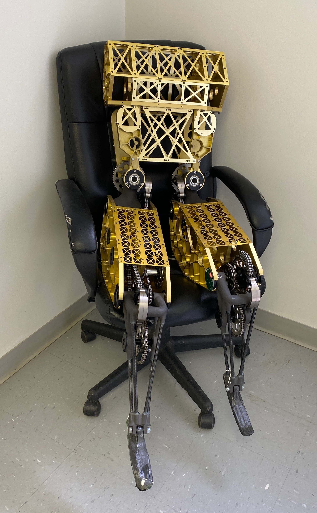
01 / 04
Humanoid Joint Control
The electronics and controls that helped a high efficiency biped keep its legs in check under motion
Project premise
High-precision, low-latency joint measurement is critical to a consistent gait
Scope6 high-rate PCBs
SystemTik Tok (before that Tik Tok)
FocusEncoder accuracy + control scheduling
Tik Tok is an active bio-hybrid humanoid project spun out of Professor Andy Ruina's work at Cornell. I helped design and fabricate the PCBs that captured and relayed rotations at the knees, hips, and ankles. The boards homed multiple subsystems in a fixed packaging, making layout and assembly challenging. Here I learned to use stencil and validation tooling for SMD components, alongside signal integrity and mixed signal logic.
The payoff was seeing a multi-joint rollout start to resemble a gait. Nothing glamorous about a clean encoder trace, but it is a good day when the whole stack finally agrees on where the body is.
Electric vehicles ground-up designed and manufactured in-house for energy efficiency and increasing levels of autonomy
Project premise
For the automotive industry, electrification is still maturing, while autonomy is yet unsolved
RoleFull-Team Lead
Team Size60 students and faculty across ME, EE, CS, Ops
Tenure2021 - 2024
When I joined Cornell Electric Vehicles, it was a team of ~20 and solely purposed for Shell Eco Marathon Americas energy efficiency competition. However, it had already been 10 years since the first mass-market Nissan Leaf (quite full-circle, this is the robotaxi platform of choice for Wayve!), and a few of us felt the team needed a new mandate. My first year was across our sapling Autonomy team, where traditional computer vision and SLAM led us to promising results in sim and virtual competitions (still COVID-era). In parallel however, I learned more about PCB design, and leaned into building the first 'Electrical Automation' board. This board served as what industry calls a 'vehicle interface controller', switching and conducting integrity checks on actuation outputs/feedback from our onboard autonomy compute. This effort paved the way for our eventual L1 autonomy demonstration: Autonomous Emergency Braking. The team has since championed the autonomy stack well past L1, and on vehicles of multiple scales, making autonomy a first-class pursuit of its members.
Most of my engineering time went into 7 revisions of our 2kW BLDC Motor Controller (or 'Electric Speed Controller'). I experimented with everything mixed signal and power here: different power layouts, commutation patterns, heat dissipation, and (most frustratingly) load protections. One of these Motor Controllers ran our 150kg car and driver around the paddocks of the iconic Indianapolis Motor Speedway!
Outside of electrical and autonomy development, the workshop became a second home for me in college, and my teammates a second family. I learned a ton, from carbon fiber resin layups and machining extrusions, to aero profiling and low-latency telemetry. From a birds-eye view of technical roadmaps running all-hands, to the minutia of subteam struggles, some of my best (and most challenging) memories are with the team.
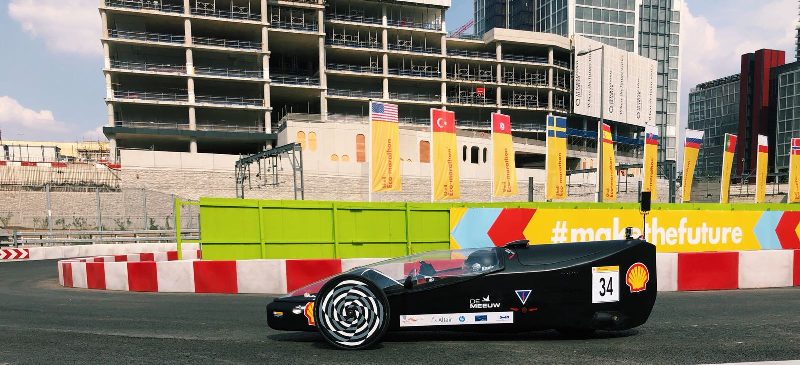
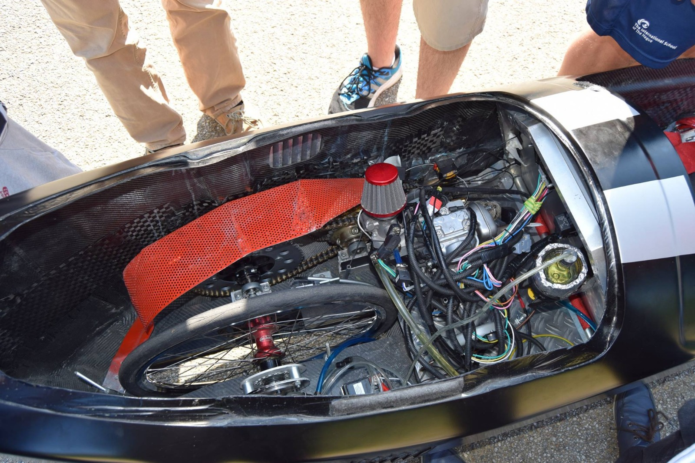
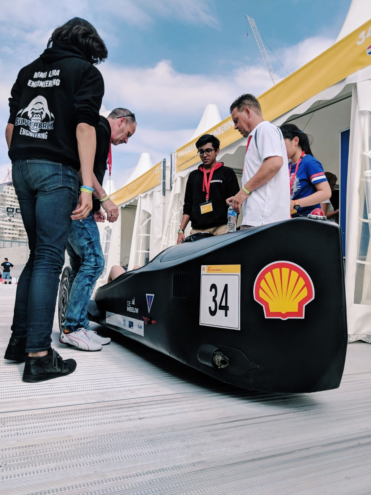
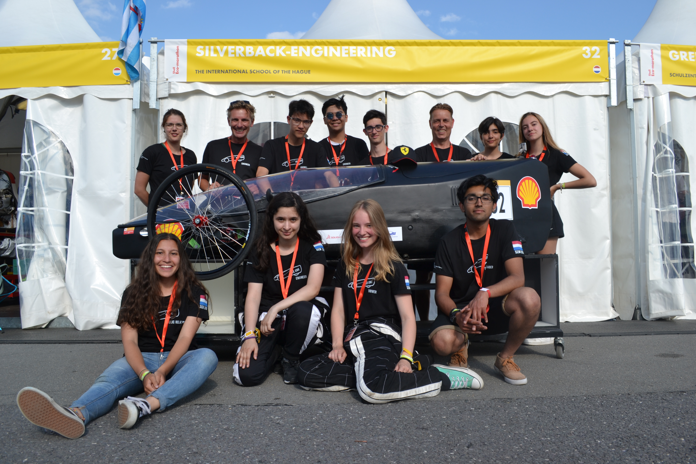
01 / 05
Silverbacks Engineering
Lightweight and finely tuned prototype vehicle for supermileage
Project premise
ICE efficiency is a complex optimization with chassis, engine map, and driving profile all contributing
RoleTeam Lead
Team12 students
ResultTop high-school efficiency result
Many high schools have teams where students explore engineering, but at the International School of The Hague the team was more serious. The Netherlands has a sterling record of high school and university teams competing at the frontiers of energy technology in mobility, particularly across battery-electric and hydrogen fuel sources. The Silverbacks Engineering team I led still holds one of the strongest efficiency results recorded by a high-school team in the Shell Eco Marathon Europe competiton.
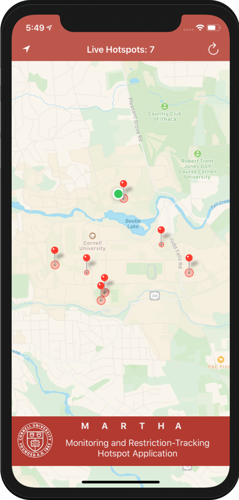
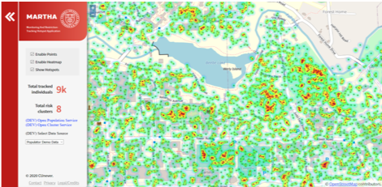
01 / 02
MARTHA
COVID-era service to help avoid a crowd before you even leave the house
Project premise
Social distancing on a college campus was impractical at best, but impossible without remote hotspot tracking
BuiltIOS app + aggregation website
MilestoneCornell HackOurCampus FInalist
DirectionCampus-wide deployment
MARTHA ("Monitoring and Restriction Tracking Hotspot Application", but more importantly named for Cornell President Martha Pollock) was a hackathon solution to the problem of avoiding hotspots for unsafe activity around campus. Dining halls, frat row, and campus buildings were the most obvious places to avoid, but how could you know if your walking route to classes was packed?
While lockdown ended before a solution like this became necessary, Fall 2020 was the perfect time to build and demo the capability of such a service. There are potential post-COVID applications of such opt-in tracking tech, like crowd management for venues, city organizers, or even for public services to track usage.
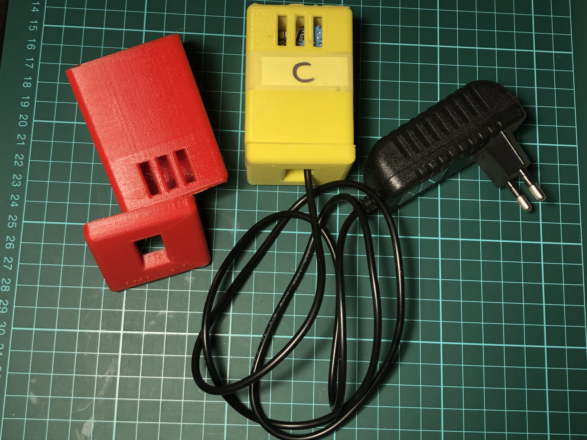
01 / 02
SAFE
Sensor pod and paired mobile app to detect and prevent heat stress early
Project premise
In-home heatstroke is becoming a major health hazard for the elderly in developing-world households
BuiltSensor array + AI model
PilotIndia field test
ResearchModel input nullification handling
SAFE was a concept inspired by the heatstroke of an elderly relative in their home in India. It sounds like an isolated incident, and not one we usually hear of in the West, but is surprisingly common in the East, particularly among the elderly. The research is that bodily thermal regulation capability reduces with age, as well as the ability to accurately gauge enviornmental conditions. Combined with rising temperatures globally, and the liklihood of households in developing countries to lack central climate control, SAFE was intended to act as a canary for unsafe enviornmental conditions.
To trial the system, I took a handful of pods to India and presented to an esteemed geriatric physician, who oversaw my successful trials in a handful of old-age homes. Should the system have been taken forward and productionised, it could have application in senior homes and hospitals everywhere.
One interesting failure mode I noted from the India field trials was due to missing inputs (mainly sensor drop-outs), causing the model to fail forward passes and provide inaccurate risk assessments. This prompted my research on neural network input nullification for healthcare applications, and proposal on a heuristic to reduce the impact of missing data. The resulting paper was presented in a talk to University of Amsterdam faculty.